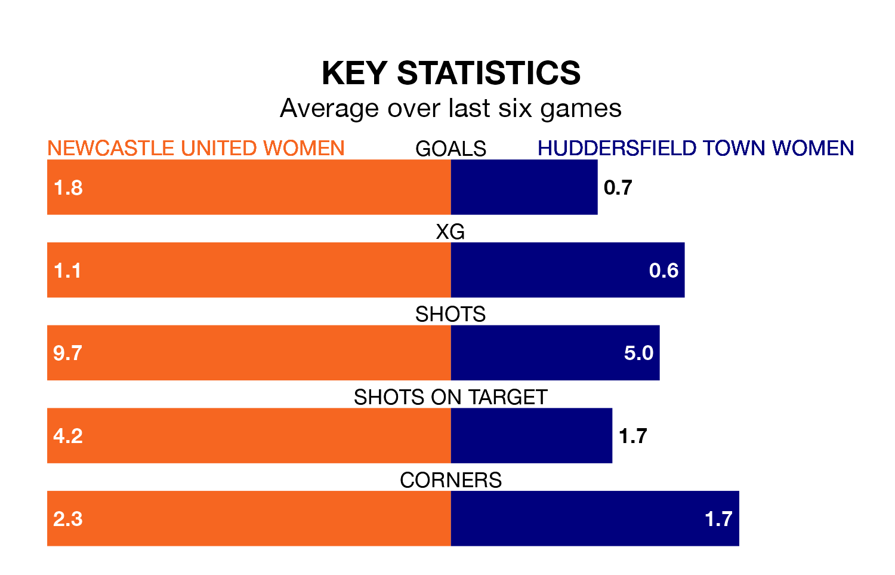

Relegation candidates Huddersfield Town Women face a challenge away against high-flying Newcastle United Women at the Stainton Park Stadium on Sunday.
Huddersfield Town Women are 11th in the Women's National League Premier Division – North table, and have picked up two wins and three draws in their 16 games to date.
Newcastle United, meanwhile, are top of the standings with 45 points, having won 13 and drawn six of their first 19 matches.
With 45 goals in 19 games so far this season, Newcastle United are the league's highest scorers with 2.4 goals per game. And they are conceding fewer than average, letting in seven goals at a rate of 0.4 per game.
Huddersfield Town, meanwhile, are below average scorers, with 0.8 goals per game, compared to a league average of 1.5. They have conceded 2.5 goals per game.
The hosts are in good form in the Women's National League Premier Division North, with four wins and two draws from their last six games.
With a win and three draws over that period, the away side's form is much worse – they have taken six points from 18, compared to Newcastle United's 14.
Newcastle United's last match was on March 31, a 0-0 draw against Liverpool Feds.
Huddersfield Town drew 0-0 with Burnley Women last time out, on April 7.
Updated: 10:01 (UTC), 12/04/24